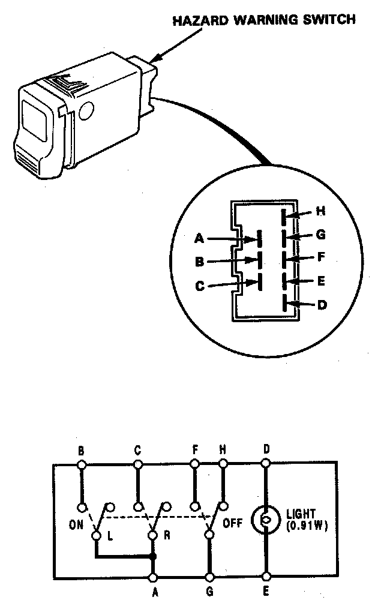
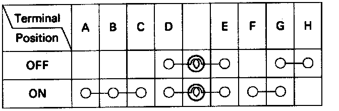

Hazard Warning Lamps: Testing and Inspection
Hazard Warning Switch Test
1. Remove the instrument panel.

2. Remove the hazard warning switch from the instrument panel.

3. Check for continuity between the terminals in each switch position according to the table.